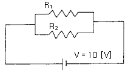
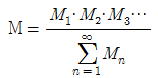
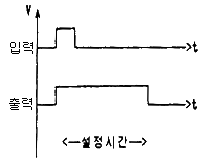
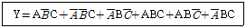
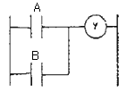
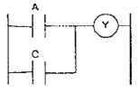
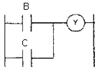
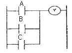

생산자동화산업기사 (2006-03-05 기출문제)
1과목: 기계가공법 및 안전관리
1. 기계작업에서 고속 주축의 급유를 균등히 할 목적에 이용하는 급유법은?
- 핸드 오일링법 ( hand oiling )
- 링 급유법 ( ring oiling )
- 오일레스 오일링법 ( oiless oiling )
- 적하 급유법 ( drop oiling )
(정답률: 20%)

2. 일반적으로 손 다듬질 가공에 해당되지 않는 것은?
- 해머링 (hammering)
- 스크레이핑 (scraping)
- 파일링 (filing)
- 호닝 (honing)
(정답률: 19%)
3. 각도 측정기가 아닌 것은?
- 플러그 게이지
- 사인바
- 컴비네이션 세트
- 수준기
(정답률: 42%)
4. 안전 작업 중 틀린 것은?
- 기계운전 중 정전시에는 스위치를 넣고 기다린다.
- 스위치 주위에는 재료를 놓지 않도록 한다.
- 퓨즈는 규정된 것만을 사용한다.
- 전동기에 절삭유가 스며들지 않도록 한다.
(정답률: 66%)
5. 인벌류우트 곡선을 그리는 원리를 응용한 이의 절삭방법을 무엇이라고 하는가?
- 창성법
- 총형 커터에 의한 방법
- 형판에 의한 방법
- 래크 커터에 의한 방법
(정답률: 35%)
6. 선반 작업 중 안전관리에 적합하지 않는 것은?
- 연속된 칩(chip)은 쇠 솔을 사용, 제거한다.
- 바이트의 자루는 가능한 길게 물린다.
- 측정, 속도변환 등은 반드시 기계를 정지 후에 한다.
- 선반작업 중 척 핸들 등 공구는 기계위에 놓아서는 안 된다.
(정답률: 82%)
7. 공작기계의 절삭방식에서 입자에 의한 가공법이 아닌 것은?
- 샌드 블라스팅 ( sand blasting )
- 액체 호닝 ( liquid honing )
- 래핑 ( lapping )
- 호빙 ( hobbing )
(정답률: 24%)
8. 밀링작업에서 하향절삭의 장점이 아닌 것은?
- 날이 부러질 염려가 없다.
- 날의 마멸이 적고, 수명이 길다.
- 날 하나 마다의 날 자리 간격이 짧다.
- 가공할 면의 시야가 좋다.
(정답률: 44%)
9. 구성인선(built-up edge)이 생기는 것을 방지하기 위한 대비책으로 틀린 것은?
- 바이트의 윗면을 경사각을 크게 한다.
- 절삭 속도를 크게 한다.
- 윤활성이 좋은 절삭유를 사용한다.
- 칩 두께를 크게 한다.
(정답률: 47%)
10. 연삭숫돌에서 숫돌의 경도가 크다는 것은 무엇을 의미하는가?
- 입도
- 밀도
- 자생력
- 결합도
(정답률: 21%)
11. 드릴 머신으로 얇은 철판에 구멍을 뚫을 때, 그 판 밑에 무엇을 받치면 가장 좋은가?
- 구리판
- 강철판
- 나무판
- 니켈판
(정답률: 20%)
12. 볼나사(ball screw)가 쓰이는 공작기계는?
- 수치제어 선반
- 세이퍼
- 플레이너
- 슬로터
(정답률: 5%)
13. 보통 선반과 같으나, 정밀한 형식으로 되어 있으며, 테이퍼깍기 장치, 릴리빙 장치가 부속되어 있는 선반은?
- 공구 선반
- 모방 선반
- 수직 선반
- 터릿 선반
(정답률: 29%)
14. 넓은 평면을 빨리 깎기에 적합한 밀링커터는?
- T-커터(T-cutter)
- 엔드 밀(end mill)
- 페이스 커터(face cutter)
- 앵글 커터(angle cutter)
(정답률: 43%)
15. 슬로터에서, 일반적으로 가공할 수 없는 것은?
- 내부 스플라인
- 넓은 평면 가공
- 각 구멍
- 키이홈 가공
(정답률: 36%)
16. 기어 절삭용 공구가 아닌 것은?
- 호브(hob)
- 호운(hone)
- 랙 커터
- 피니언 커터
(정답률: 74%)
17. 세 개의 같은 지름의 철사를 사용하여 수나사의 유효 경을 측정하는 방법은?(오류 신고가 접수된 문제입니다. 반드시 정답과 해설을 확인하시기 바랍니다.)
- 지름법
- 삼침법
- 반지름법
- 등경법
(정답률: 21%)
18. 선반에서 기어, 벨트, 풀리 등의 소재와 같이 구멍이 뚫린 일감의 바깥 원통면이나 옆면을 가공할 때 사용하는 부속품은?
- 맨드릴
- 연동척
- 방진구
- 돌리개
(정답률: 27%)
19. 세라믹 공구의 주성분은?
- 산화 알루미늄
- 니켈
- 크롬
- 텅스텐
(정답률: 28%)
20. 연삭숫돌 중 백색 산화알루미늄 입자인 것은?
- WA숫돌
- C숫돌
- GC숫돌
- A숫돌
(정답률: 72%)
2과목: 기계제도 및 기초공학
21. 어떤 물체에 수직 방향으로 힘을 가할 때 단위 면적당 가해지는 힘은 무엇인가?
- 대기압
- 무게
- 중력
- 압력
(정답률: 66%)
22. 그림과 같이 10[Ω]의 저항R과 5[Ω]의 저항 R2가 병렬로 접속되어 있는 회로에 V=10[V]의 전압을 가할 때 합성저항의 크기는?(오류 신고가 접수된 문제입니다. 반드시 정답과 해설을 확인하시기 바랍니다.)

- 0.3[Ω]
- 3.3[Ω]
- 7.5[Ω]
- 15[Ω]
(정답률: 24%)
23. 1㎏ 질량은 4℃ 순수한 물 1,000cm3의 무게로 정의 된다. 여기서 1,000cm3와 같은 부피를 나타낸 것은?
- 1,000㏄
- 10,000㏄
- 10ℓ
- 100ℓ
(정답률: 65%)
24. 지름 400mm의 풀리에 2.5kN의 회전력이 작용하여 180rpm으로 회전할 때 토크는?
- 500 Nㆍm
- 500 Nㆍmm
- 1000 Nㆍm
- 1000 Nㆍmm
(정답률: 30%)
25. 다음은 원의 면적을 나타내는 식이다. 틀린 것은? (단, r : 원의 반지름, d : 원의 지름이다.)
- πr2
- πd2 / 4
- πd2
- π(d/2)2
(정답률: 35%)
26. 연강을 인장하여 1/2,000의 변형률이 생겼다면 이 재료의 응력은? (단, 탄성계수는 2.1×106[kgf/cm2])
- 420[kgf/cm2]
- 1,⑤0[kgf/cm2]
- 1,500[kgf/cm2]
- 1,800[kgf/cm2]
(정답률: 19%)
27. “정지 또는 운동상태에 있는 물체에 힘이 작용하지 않는 한 그 물체는 정지 또는 등속직선 운동을 유지하려는 성질을 지닌다”라고 정의되는 법칙은 다음 중 어느 것인가?
- 질량의 법칙
- 가속도 발생의 법칙
- 관성의 법칙
- 작용반작용의 법칙
(정답률: 56%)
28. 1개의 물체에 다수의 힘이 작용하는 힘의 모멘트(moment of force)에 관한 설명으로서 맞는 것은?
- M =

- M = M1 + M2+ M3 + M4 + …
- M = M1 ㆍ M2 ㆍ M3 …
(정답률: 30%)
29. 자동차가 10분 동안에 10km를 달렸다면 이 자동차의 속도는 몇 km/h인가?
- 1
- 10
- 60
- 100
(정답률: 70%)
30. 1초 동안 도선의 단면을 통해서 흘러나가는 전하량을 정의하는 용어와 사용되는 단위가 옳게 연결된 것은?
- 전압 [V]
- 저항 [Ω]
- 전류 [A]
- 전하 [C]
(정답률: 15%)
31. 주기억장치의 용량을 실제보다 크게 활용할 수 있도록 하기 위하여 실제 자료를 보조기억장치에 두고 주기억장치에 있는 것과 같이 처리 시킬 수 있는 기억장치는?
- 가상 기억장치
- 확장 기억장치
- 캐시 기억장치
- 기본 기억장치
(정답률: 49%)
32. “윈도 98”에서 이미 사용되었던 3.5인치 플로피 디스크를 신속히 포맷할 경우 사용하는 옵션은?
- 빠른 포맷
- 전체
- 시스템 파일만 복사
- 이름표 없음
(정답률: 5%)
33. 작업수행 중 예기치 못한 돌발적인 사태가 발생하여 잠시작업 수행을 멈추고 상황에 맞는 처리를 한 후, 다시 프로그램을 진행해 나가는 것을 의미하는 것은?
- 스풀링
- 인터럽트
- 폴링
- 버퍼링
(정답률: 14%)
34. 시간을 쪼개어 사용함으로서 각 사용자가 마치 자신만이 컴퓨터를 사용하고 있는 것처럼 느끼도록 제공하는 시스템은?
- 시분할 시스템
- 실시간 시스템
- 분산처리 시스템
- 온라인 시스템
(정답률: 15%)
35. 운영체제의 구성 요소 중 프로세서를 생성, 실행, 중단, 소멸 시키는 것은?
- 스케줄러(scheduler)
- 드라이버(driver)
- 에디터(editor)라.
- 스풀러(spooler)
(정답률: 35%)
36. "윈도 98“에서 클립보드에 관한 설명 중 옳지 않은 것은?
- 다른 프로그램의 정보도 가져오거나 보낼 수 있다.
- 한번에 한 가지의 정보만 저장할 수 있다.
- 제일 마지막에 들어온 정보를 기억하고 있다.
- 선정된 대상을 클립보드에 복사하는 기능키는 Shift+X이다.
(정답률: 20%)
37. “윈도 98”에서 [디스크 검사]를 수행한 결과, 나타나는 항목이 아닌 것은?
- 총 디스크 공간 용량
- 각 할당 단위
- 숨겨진 파일 용량과 파일 수
- 사용할 수 없는 공간 용량
(정답률: 31%)
38. “윈도 98”에서 PLUG & PLAY 란?
- 컴퓨터에 전원을 켜자마자 바로 시작되는 것
- 운영체제가 주변기기를 자동 인식하는 것
- 전원을 끈 상태에서도 컴퓨터가 작동되는 것
- 전원을 그냥 꺼도 운영체제가 모든 응용프로그램의 마무리 작업을 수행하는 것
(정답률: 18%)
39. what is the name of the program that can fix minor errors on your hard drive?
- SCANDISK
- FDISK
- FORMAT
- MEM
(정답률: 30%)
40. "윈도 98“에서 DOS의 디렉토리와 유사한 의미를 가진 것은?
- 파일(file)
- 트리(tree)
- 로그오프(log-off)
- 폴더(folder)
(정답률: 32%)
3과목: 자동제어
41. PLC(Programmable Logic Controller)는 생산현장에 설치되어 기계장치를 제어하는데 매우 유용하게 이용되고 있다. 이 PLC의 주요 구성요소로 적합하지 않은 것은?
- 전원부
- CPU
- 입출력부(I/O interface)
- 전자개폐기
(정답률: 70%)
42. 서보 전동기는 서보기구에서 주로 어느 부분의 기능을 담당하는가?
- 비교부
- 검출부
- 조작부
- 제어부
(정답률: 17%)
43. 마이크로컴퓨터시스템에서 상호 필요한 정보를 주고 받는 데는 버스(Bus)를 이용하는데 다음 중 해당 되지 않는 버스는?
- 명령버스
- 어드레스버스
- 데이터버스
- 제어버스
(정답률: 50%)
44. 래더다이어그램(ladder diagram)에 대한 설명으로 옳은 것은?
- 릴레이 제어회로의 표현에 사용된다.
- 위치제어 문제의 정확한 해결에 사용된다.
- 프로그램 메모리에 저장되는 프로그램이다.
- 제어 시스템에서 부품의 연결은 나타내는 계획도이다.
(정답률: 14%)
45. 다음 중 PLC 출력부의 출력 접접형태 중에서 교류와 직류에 모두 사용할 수 있는 것은?
- 릴레이 출력
- 트라이액 출력
- 트랜지스터 출력
- D/A 출력
(정답률: 22%)
46. F(s) = 1 / s+2 의 라플라스 역변환은?
- e-2t
- 2e-2t
- e2t
- 2e2t
(정답률: 28%)
47. PLC의 I/O의 역할과 거리가 먼 것은?
- 잡음제어
- 절연 결합
- 기억 선택
- 신호레벨변환
(정답률: 34%)
48. 전달함수의 값이 1인 경우의 의미는?
- 일정량의 입력이 출력에서 0이다.
- 입력량이 0일 때, 출력은 1이다.
- 입력량이 무한대일 때, 출력은 1이다.
- 입력과 출력의 양이 같다.
(정답률: 23%)
49. 여러 개의 비트로 표현된 정보를 전송하는 방식에는 직렬 전송과 병렬 전송이 있는데 다음 중 직렬전송에 관한 설명으로 맞는 것은?
- 여러 비트를 한꺼번에 전송하는 방식이다.
- 정보 전달이 고속으로 이루어진다.
- 주로 프린터용이나 계측제어용으로 사용한다.
- 표준 인터페이스로는 RS-232C가 있다.
(정답률: 5%)
50. 다음 그림과 같은 타임차트를 만드는 회로는?(오류 신고가 접수된 문제입니다. 반드시 정답과 해설을 확인하시기 바랍니다.)

- 지연동작회로
- 지연복귀회로
- 자기유기회로
- 일정시간 동작회로
(정답률: 21%)
51. 시퀀스 제어계에서 제어대상을 조작하기 위해 제어대상에 가하는 신호를 무엇이라고 하는가?
- 제어명령
- 조작신호
- 검출신호
- 기준신호
(정답률: 8%)
52. 2진수 11.1을 10진수로 나타내면?
- 7.5
- 6.5
- 6.25
- 7.25
(정답률: 16%)
53. 중앙처리 장치 또는 기억장치의 동작속도와 외부버스로 연결된 입출력장치의 동작속도를 맞추는데 사용되는 레지스터(register)는?
- 시퀀스 레지스터
- 버퍼 레지스터
- 어드레스 레지스터
- 쉬프트 레지스터
(정답률: 54%)
54. PLC의 노이즈 방지대책을 나타낸 것 중 입력기기로부터 침입하는 노이즈를 방지할 수 있는 대책은?
- 전원 필터 사용
- 릴레이 중계
- 스파크 킬러 삽입
- 차폐 케이블에 의한 배선
(정답률: 14%)
55. 온도, 유량, 압력 등을 제어량으로 하는 제어계로서 프로세스에 가해지는 외란의 억제를 주 목적으로 하는 것은?
- 프로세스 제어
- 자동제어
- 서보 기구
- 정치 제어
(정답률: 67%)
56. 다음 중 공정 제어에 속하는 것은?
- 선박의 자동 조타
- 열차표의 자동 판매
- 석유 화학 공장의 자동화 설비
- 발전기의 정전압 장치
(정답률: 10%)
57. 전담함수의 표현으로 맞는 것은?
- 전달함수 = 라플라스 변환된 출력 / 라플라스 변환된 입력
- 전달함수 = 라플라스 변환된 입력 / 라플라스 변환된 출력
- 전달함수 = 입력 + 출력 / 입력
- 전달함수 = 디지털변환 / 아날로그변환
(정답률: 17%)
58. 다음 논리식을 PLC 프로그램으로 변환할 때 옳은 것은?





(정답률: 42%)
59. 되먹임 제어방법 중 서보기구를 이용한 것과 다른 것은?
- 자동조타 장치
- 추적레이더
- 디지털 제어
- 자동평형 기록계
(정답률: 10%)
60. 단위피드백에서 전방경로 함수 G(s) = 2 / s(s+1)이다. 이때, 입력이 r(t)=10t일 때, 정상상태 오차는 얼마인가?
- 1
- 2
- 5
- 10
(정답률: 14%)
4과목: 메카트로닉스
61. 다음에 열거된 내용 중 자동화를 했을 때 단점에 해당 하는 것은?
- 생산성감소
- 인건비 상승
- 원가부담의 증가
- 생산탄력성의 결여
(정답률: 43%)
62. 두개의 맞물린 기어에 압축공기를 공급하여 토크도 얻으며 정역회전이 가능한 공압모터는?
- 기어모터
- 배인모터
- 피스톤모터
- 요동형엑츄에이터
(정답률: 41%)
63. 설비의 효율화에 악영향을 미치는 로스 중 속도로스에 속하는 것은?
- 고장정지로스
- 작업준비/조정로스
- 공전/순간 정지 로스
- 초기 유동 관리 수율관리
(정답률: 57%)
64. 유압모터의 종류로 적합하지 못한 것은?
- 기어형
- 격판형
- 배인형
- 피스톤형
(정답률: 41%)
65. 광센서와 같이 송신부와 수신부로 구성되며 전기에너지와 탄성에너지의 가역변환에 의해 물체 유무 검출이나 변위센서로도 이용되는 센서는?
- 서미스터
- 초음파센서
- 파이로센서
- 스트레인게이지
(정답률: 42%)
66. 신뢰성을 척도(%)로 표시하는 경우에 신뢰도라 하며 신뢰성을 나타내는 척도가 아닌 것은?
- 평균고장수리기간
- 고장률
- 평균고장간격시간
- 신인도
(정답률: 38%)
67. 자외선에 의해 지울 수 있는 반도체 메모리는?
- RAM
- PROM
- EPROM
- EAROM
(정답률: 44%)
68. 제어계의 기기와 장치 등의 접속을 표시한 것은?
- 상태도
- 논리도
- 타임차트
- 전개접속도
(정답률: 32%)
69. 자동화의 기본장치 중 생산공정의 장비와, 생산되고 있는 부품, 조작하는 오페레이터로부터정보를 수집하는 역할을 하는 장치는?
- 감지장치
- 분석장치
- 작동장치
- 검사장치
(정답률: 23%)
70. 다음 중 제어 시스템의 정의를 옮게 설명한 것이 아닌 것은?
- 적은 에너지로 큰 에너지를 조절하기 위한 시스템이다.
- 기계나 설비의 작동을 자동으로 변화시키는 구성 전체를 의미한다.
- 기계의 재료나 에너지의 유동을 중계하는 것으로 자동이 아닌 것이다.
- 사람이 직접 개입하지 않고 어떤 작업을 수행시키는 것이다.
(정답률: 50%)
71. 유압시스템의 고장원인 중 압력저하(실린더의 추력감소)의 원인이 아닌 것은?
- 내부 누설의 감소
- 펌프의 흡입불량
- 구동 동력 부족
- 펌프의 성능 저하
(정답률: 49%)
72. 신호발생요소의 신호영역을 on-off 표시방식으로 나타낸 것으로 요소간의 신호간섭 현상을 예지할 수 있는 것은?
- 논리도
- 제어선도
- 기능선도
- 레더다이아그렘
(정답률: 20%)
73. 공압타이머에서 제어신호가 존재함에도 불구하고 출력신호가 발생되지 않는 원인은?
- 제어라인에서의 공기의 누설
- 이물질로 인한 고장
- 수분으로 인한 고장
- 공급유량의 과다
(정답률: 22%)
74. 두 개의 복동실린더가 한개의 복동실린더 형태로 조립되어 직경에 비해 출력이 큰 실린더는?
- 다위치제어 실린더
- 충격실린더
- 텐덤실린더
- 쿠션내장형 실린더
(정답률: 60%)
75. 다음 중 전자계전기의 기능으로 옳지 않은 것은?
- 작은 입력신호를 큰 출력신호로 변환한다.
- 입력신호와 반대 동작이 되는 출력신호를 얻을 수 있다.
- 하나의 입력신호로 여러개의 출력 신호를 동시에 얻을 수 있다.
- 입력신호를 원격지에 전송 할 수 있다.
(정답률: 28%)
76. 압력센서의 용도가 아닌 것은?
- 중량검출
- 토크검출
- 힘검출
- 성분검출
(정답률: 75%)
77. 출력 측의 한쪽을 부하와 연결하고 다른 쪽 단자(공통단자)를 0V에 접시 시키는 센서는? (단, 센서 작동시 + 전압 출력됨)
- NP형
- PN형
- NPN형
- PNP형
(정답률: 18%)
78. 다음 중 연산 증폭기로 구성할 수 없는 회로는?
- 아날로그 계산기
- 발진회로
- 디지털 메모리 회로
- 여과기
(정답률: 24%)
79. 제품이 여러 처리 과정을 거칠때의 상태와 위치를 관리 감독하는 시스템은?
- CAPP
- FMS
- PTFC
- AMHS
(정답률: 14%)
80. 변위단계선도에 대한 설명으로 옳은 것은?
- 단순한 논리연결을 표현한다.
- 순차제어에서 시간에 대한 정보를 제공한다.
- 플래그, 카운터, 타이머의 기능을 가지고 있다.
- 스텝에 따른 작업요소의 작동순서를 표현한다.
(정답률: 58%)